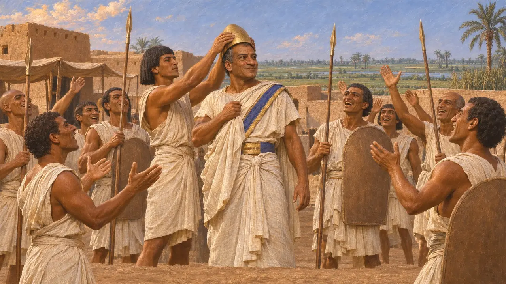
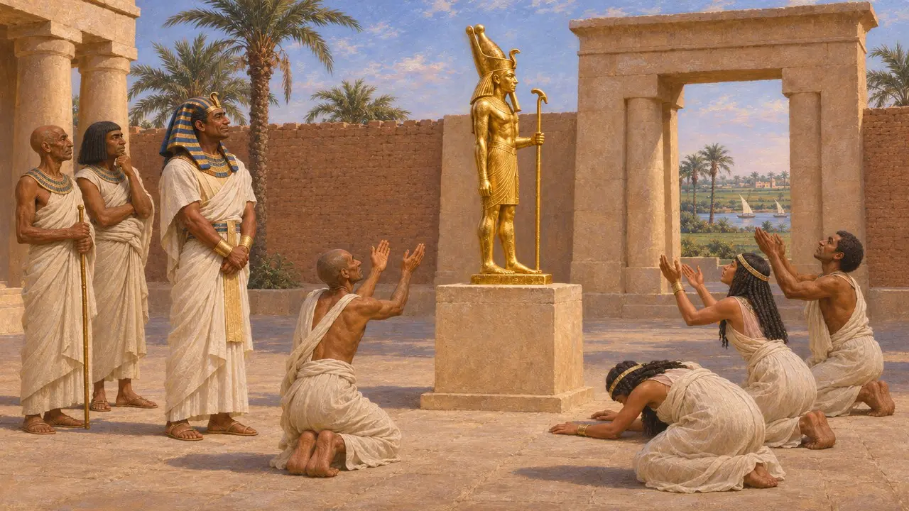
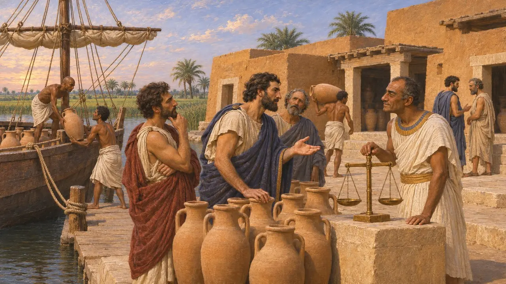
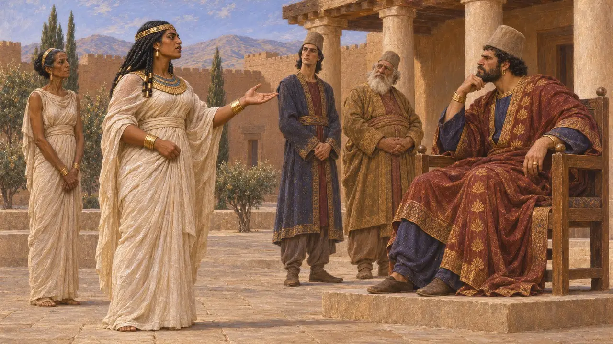
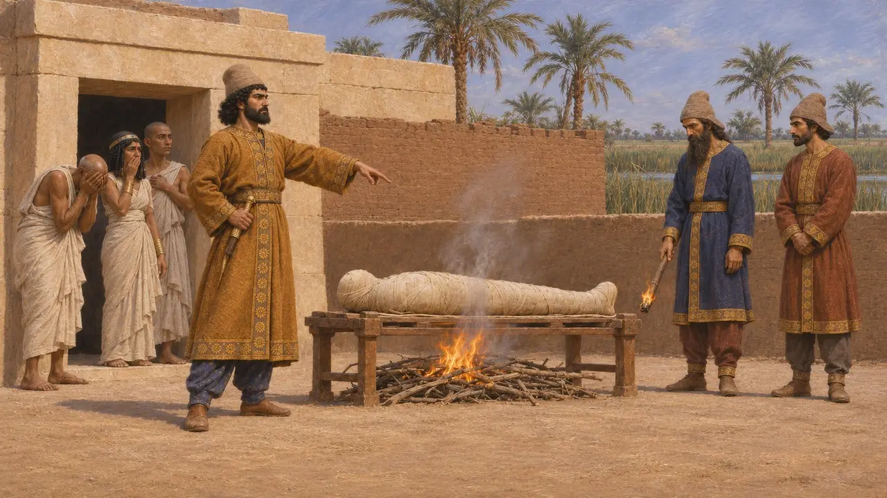
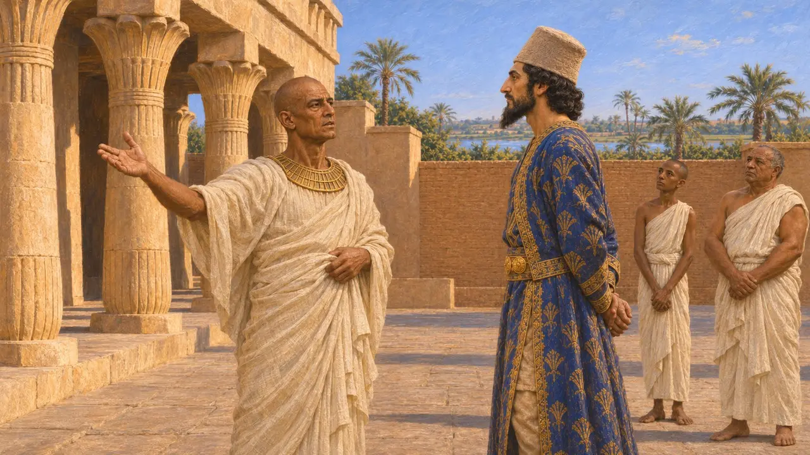

아마시스 2세는 약 44년간 이집트를 다스렸고, 캄비세스가 침공하기 직전인 기원전 526년에 세상을 떠났다. 전쟁은 아들 프삼티크 3세가 물려받았다. 그에 관해 전해지는 이야기는 대부분 이집트에서 전해 들은 왕의 일화를 모은 헤로도토스에게서 나오며, 이집트의 기념물과 우자호레스네트의 조각상은 이집트 쪽의 시각을 보여 준다.
게임에서: 아마시스는 이집트 정복과 펠루시온 전투를 다룬 백과사전의 사건 항목에만 이름이 나온다. 어느 레벨에도 등장하지 않으며 고유한 게임 메커니즘도 없다.

왕이 된 장군
고대의 전승헤로도토스에 따르면 아마시스는 아프리에스 왕이 이집트 군대의 반란을 진정시키라고 보냈으나, 오히려 병사들에게 왕으로 추대되었다. 아프리에스는 그리스 용병과 카리아 용병을 이끌고 그에게 맞서 진군했다가 패했고, 아마시스가 왕좌를 차지했다. 헤로도토스는 그의 치세를 44년이라 하는데, 현대 역사가들은 이를 기원전 570년부터 526년까지로 계산한다.
Herodotus 2.161-169, 2.177

발 씻는 대야 이야기
후대의 전설헤로도토스에 따르면 아마시스는 미천한 출신이었고 신하들은 그를 경멸했다. 그는 황금 발 씻는 대야를 녹여 신의 상으로 만들게 했고, 사람들은 그 상을 숭배했다. 그러자 아마시스는 자신을 비판하는 자들에게 자신의 출세도 이와 똑같은 과정을 거쳤다고 말했다. 이 이야기는 왕권에 관한 교훈담이며, 이를 뒷받침하는 문서는 없다.
Herodotus 2.172

나우크라티스와 그리스인
고대의 전승헤로도토스에 따르면 아마시스는 그리스인을 우대하여 나우크라티스를 그리스 상인이 교역하고 정착할 수 있는 유일한 항구로 삼았다. 그는 또 리디아의 크로이소스와 동맹을 맺었다고도 전한다. 발굴 결과 그리스인은 그의 치세 이전부터 나우크라티스에서 교역하고 있었으므로, 그의 조치는 이미 있던 항구를 규제한 것으로 보는 편이 낫다.
Herodotus 2.178-179, 1.77

캄비세스가 온 까닭
분쟁 중헤로도토스는 침공의 이유를 서로 엇갈리게 전한다. 한 이야기에 따르면 아마시스는 자기 딸 대신 아프리에스의 딸을 캄비세스의 신부로 보냈고, 그녀가 그 속임수를 폭로했다. 헤로도토스는 페르시아인들은 이 이야기를 다르게 전한다고 말하며, 캄비세스가 그녀의 아들이라는 이집트인의 주장은 캄비세스가 키루스의 아들이므로 받아들이지 않는다. 현대 역사가들은 이런 이야기를 설화로 보고, 바빌론과 리디아에 이어 이집트까지 차지하려 한 페르시아의 야심에서 원인을 찾는다.
Herodotus 3.1-3

죽음, 프삼티크, 그리고 미라
고대의 전승헤로도토스에 따르면 아마시스는 페르시아인이 오기 전에 죽었고, 캄비세스가 이집트에 이르렀을 때 그의 아들 프삼티크 3세는 즉위한 지 6개월밖에 되지 않았다. 그는 또 캄비세스가 사이스에 있는 아마시스의 무덤에서 시신을 꺼내 능욕하고 불태우게 했다고 전한다. 헤로도토스는 죽은 자를 불태우는 일이 페르시아와 이집트 양쪽의 관습에 어긋난다고 덧붙이며, 많은 역사가가 이 이야기를 의심한다.
Herodotus 3.10, 3.16

이집트에서 본 시각
당대 기록제독 우자호레스네트는 아마시스와 프삼티크 3세를 섬겼다. 그의 조각상에 새긴 비문은 그가 어떻게 캄비세스와 페르시아 왕들을 섬기게 되었는지 전하며, 통치자가 바뀐 일에 대한 이집트 쪽 기록을 담고 있다.
Statue of Udjahorresnet
출처
- Herodotus 2.161-179
- Herodotus 3.1-16
- Statue of Udjahorresnet
- P. Briant, From Cyrus to Alexander, 2002